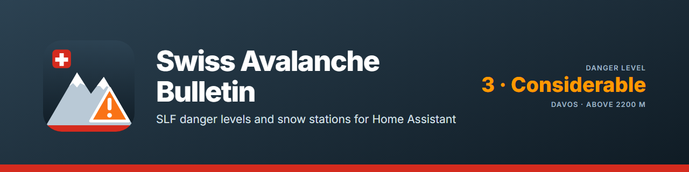

The official Swiss avalanche bulletin for your location: danger level, aspect and elevation information with proper EAWS terminology in four languages. Supports multiple locations — home, ski resort, tour region. Now also with IMIS measuring stations as favourites: snow depth, temperatures and wind from ~200 high-alpine stations, with a bundled station card.
Das offizielle Schweizer Lawinenbulletin für deinen Standort: Gefahrenstufe, Expositionen und Höhenlagen mit korrekter EAWS-Terminologie in vier Sprachen. Unterstützt mehrere Standorte — Zuhause, Skigebiet, Tourengebiet. Neu auch mit IMIS-Messstationen als Favoriten: Schneehöhe, Temperaturen und Wind von ~200 hochalpinen Stationen, mit mitgelieferter Stations-Karte.
Le bulletin d'avalanches suisse officiel pour votre emplacement : degré de danger, expositions et altitudes avec la terminologie EAWS correcte en quatre langues. Prend en charge plusieurs emplacements — domicile, station de ski, région de randonnée. Désormais aussi avec les stations de mesure IMIS comme favorites : hauteur de neige, températures et vent de ~200 stations de haute montagne, avec carte de station intégrée.
Il bollettino valanghe svizzero ufficiale per la tua posizione: grado di pericolo, esposizioni e quote con la corretta terminologia EAWS in quattro lingue. Supporta più località — casa, comprensorio sciistico, zona di gite. Ora anche con le stazioni di misura IMIS come preferite: altezza della neve, temperature e vento da ~200 stazioni d'alta montagna, con card della stazione inclusa.
Highlights
Das kann die Integration
Points forts
Punti di forza
Diese Liste gibt es nur auf Englisch.
Cette liste n'existe qu'en anglais.
Questo elenco è disponibile solo in inglese.
- The danger level for your spot: your coordinates are resolved to one of about 150 SLF warning regions; the sensors give the danger level 1–5, the region and up to three avalanche problems, refreshed every hour.
- Several locations: home, a cabin, the area of the next tour — each is its own entry.
- IMIS measuring stations: about 200 stations in the Alps and the Jura with snow depth, new snow in 24 hours, air and snow-surface temperature, humidity and wind, every 30 minutes from the official measurement API.
- A station card and a dashboard: the bundled "SLF IMIS Station" card with a visual editor, and a dashboard strategy that lays out your locations and stations by itself.
- Built for the automation editor: triggers (danger level reached, danger level changed), conditions (danger level at least / below) and a notification blueprint — no templates needed.
- No value rather than a stale one: outside the season the bulletin sensors report nothing, and a station value counts as current only within 3 hours.
- Set up in a minute: starts from your Home Assistant location, stations are picked from a list sorted by distance; German, English, French and Italian; diagnostics download with your coordinates redacted.
How to install
Installation
Installation
Installazione
Open Settings → Marketplace in Home Assistant, search for Swiss Avalanche Bulletin and download it. Restart Home Assistant, then add the integration under Settings → Devices & services. Free and open source, no account needed. The full documentation is in the README on GitHub.
Öffne in Home Assistant Einstellungen → Marketplace, suche nach Swiss Avalanche Bulletin und lade die Integration herunter. Starte Home Assistant neu und füge sie unter Einstellungen → Geräte & Dienste hinzu. Kostenlos und quelloffen, kein Konto nötig. Die ganze Dokumentation steht im README auf GitHub (englisch).
Ouvrez Paramètres → Marketplace dans Home Assistant, cherchez Swiss Avalanche Bulletin et téléchargez l'intégration. Redémarrez Home Assistant, puis ajoutez-la sous Paramètres → Appareils et services. Gratuit et open source, sans compte. La documentation complète se trouve dans le README sur GitHub (en anglais).
Apri Impostazioni → Marketplace in Home Assistant, cerca Swiss Avalanche Bulletin e scarica l'integrazione. Riavvia Home Assistant, poi aggiungila in Impostazioni → Dispositivi e servizi. Gratuito e open source, nessun account necessario. La documentazione completa è nel README su GitHub (in inglese).
More integrations
Weitere Integrationen
Autres intégrations
Altre integrazioni
Swiss MeteoSwiss WatersSwiss Public AlertsSwiss EarthquakesSwiss Hail ProtectionSwiss TransportSwiss Charging StationsAustrian Charging StationsSwiss ParkingSwiss Shared MobilitySwiss Electricity PriceSwiss Solar Reference PriceSwiss Solar ForecastInnoxel Master 3RD30 Digital InterfaceSwiss Lottery